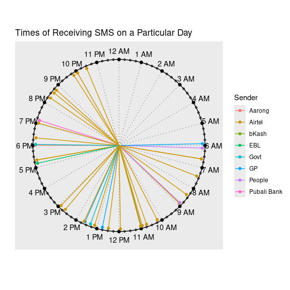

The primary goal of clockplot is to plot event time on a clock chart. Additionally it helps you make a day chart, week chart, or month chart, or plan events in those periods.
Installation
You can install the development version of clockplot from GitHub with:
# install.packages("pak")
pak::pak("mahmudstat/clockplot")Usage
Click here to see all the available functions.
Applications
Below we mention some relevant applications. Click here to see the reproducible codes.
We have a small data of times of messages received throughout a particular day, along with sender of the messages and their types. Let us the pattern of messages by senders.



Aditional Components
The charts produce ggplot objects, so you can make use of many of the functions of the ggplot2 package. You can use the labs function, for example, to add title, subtitle, caption etc. Some examples are shown in the next segment.
You can also add legend or change its position by using the code theme(legend.position = "right"); the accepted positions are top, bottom, left, and right.